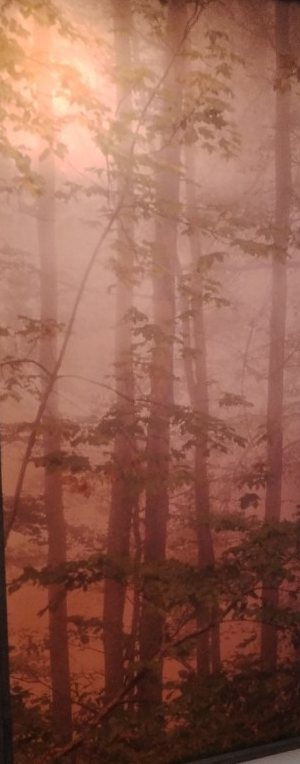

01Ouïe
Plume sur Rhodoïde
Louis Cane, 1998
« Écoute le son du vent dans les plumes. »
Plumes sur rhodoïde — 97,5 × 97,5 cm

Un parcours sensoriel et sonore pour découvrir l'art en famille. On écoute, on touche, on sent, on goûte — puis on regarde l'œuvre autrement.
Ici, le visiteur ne découvre plus l'œuvre d'abord par le regard. Il la rencontre par une sensation qu'il connaît déjà — puis il la regarde autrement.
Chaque œuvre s'ouvre par une sensation familière : le vent, une matière, une odeur, un goût d'enfance.
Écouter, toucher, sentir, goûter. On ne demande pas aux 6–11 ans de rester immobiles et muets.
Un parent accompagne son enfant sans avoir besoin de « savoir quoi dire » devant une œuvre.
On pousse la porte, on prend un casque, on avance à son rythme. La vue, elle, vous suit partout.
Chaque œuvre est reliée à un sens et à une couleur. Au sol, ces couleurs guident les enfants d'une étape à l'autre.
Louis Cane, 1998
« Écoute le son du vent dans les plumes. »
Plumes sur rhodoïde — 97,5 × 97,5 cm

Louis Cane, 2018
« Touche la résine du bout des doigts. »
Résine colorée sur grillage — 141 × 141 cm

Aurélie Pétrel, 2025
« Sens l'odeur de la forêt en automne. »
Impression sur cuivre — 192 × 100 cm

Philippe Favier, 2025
« Goûte les confitures de grand-mère. »
Pointe de gramophone sur verre peint — 35 × 44 cm
Un audioguide gratuit raconte chaque œuvre comme une histoire, à hauteur d'enfant comme d'adulte. Au sol, quatre couleurs tracent le chemin, de l'accueil au niveau 1.
À l'accueil, gratuit, rien à installer. Un casque par enfant, un par parent.
Quatre couleurs au sol mènent chacune à un sens. On choisit l'ordre, ou on se laisse guider.
Devant l'œuvre, une voix raconte une histoire et invite à écouter, toucher, sentir ou goûter.
Entre deux œuvres, une transition sonore prépare le sens suivant.
Comptez environ 45 minutes.
Pour la clôture grand public de l'exposition Résonances, les étudiants de Télécom Saint-Étienne imaginent un parcours qui ouvre la galerie aux familles qui n'y entrent jamais. La galerie prête ses œuvres ; l'école conçoit l'expérience sensorielle et sonore. Le monde officiel de l'institution et celui du dessin d'enfant, réunis le temps d'un week-end — comme dans le logo du parcours.
 Galerie · Saint-Étienne
Galerie · Saint-ÉtienneExposition Résonances — un dernier week-end pour la découvrir, cette fois par les sens.

Un week-end pour découvrir l'art en famille, autrement. Les 21 & 22 novembre, galerie Ceysson & Bénétière.
Voir l'itinéraire